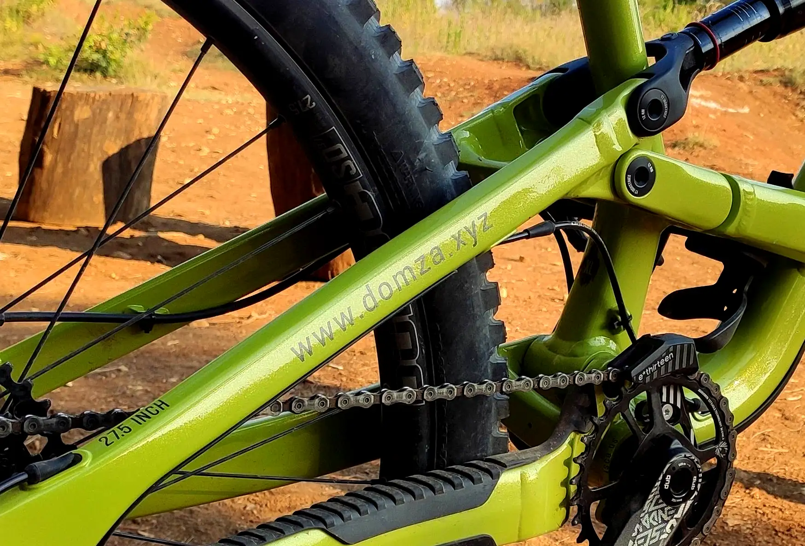
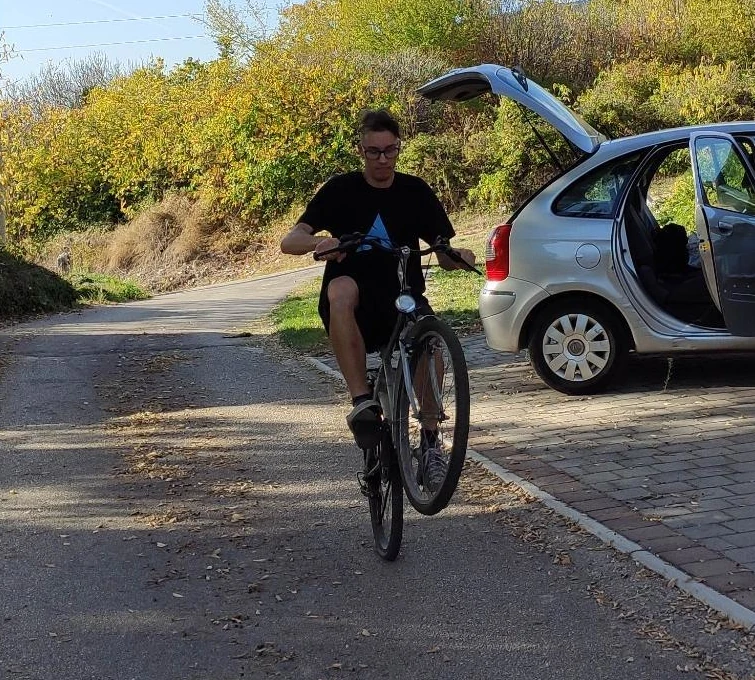
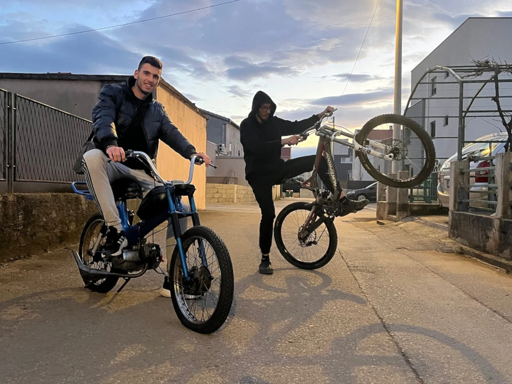
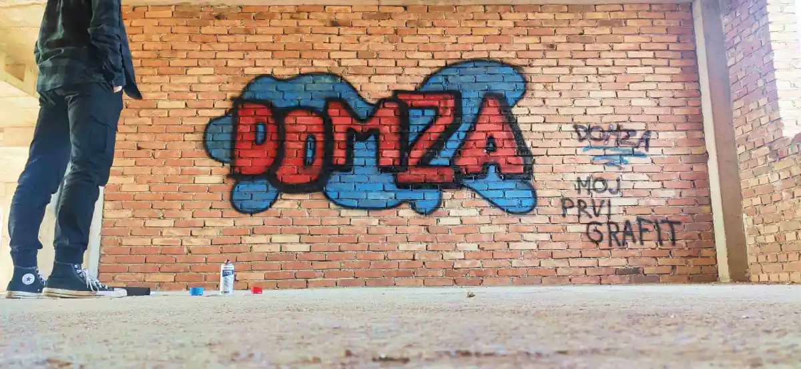

Fire, Stickers and Spring Boot
(10. Sep 2023.)
What I've been doing...
I haven't been posting much, but I've been doing a lot.
Currently, I'm working on a secret project in Spring Boot; I can't talk about it yet,
but potentially it could be a website with a lot of users that actually earns me some
passive money.
Anyway, besides that, I am learning Spring Boot since I am quite comfy with Java now.
Also, I'd say I have a decent knowledge of HTML and CSS now and am starting to get
familiar with Java Script. I still don't know much about databases, but that is
something I am looking to learn in the future. Basically, I'll be familiar with
Java and Spring Boot, as well as HTML, CSS, Java Script, SQL, and MongoDB, which
is pretty cool.
Also, I started a project in Angular: Cook It Up
Though I am not currently planning to learn Angular, I used this chance to get familiar with
it and work on my Angular project together with my friend who has to
make an Angular project for college. Basically, it's just a basic, not useful website.
Its only purpose is for me to get familiar with Angular. Currently, the project is just
an initialized github repo, but hopefully It will be something at the point that you
are reading this.
Forest fire
This happened on September 7, but I'm writing it now.
So basically, I was just riding my bike, like I usually do, and all of a sudden I
entered a just-burned-down forest... I have no fucking idea how I didn't see it
earlier but it was just like.. everything normal, and then just a straight line separating
normal from burned down. The ground was still soo hot to touch but very wet, and I saw
firefighters around 30 meters from me. It was just a feeling you can't describe—I dunno, the smell, the wet
but hot ground and the super straight line separating burned-down from not-burned-down.
This article is a mess lol. I was just randomly writing what came to my mind...

Images of custom sticker I made for my new bike... They just look amazing espettially in real life.
Also a part of burned down forest I saw.
Senj
(16. Aug 2023.)
Hmhm.. Yesterday I returned from my 3 day trip to Senj, I visited my grandma, who lives there.
Though short, the trip was amazing.
I almost wasn't even using my phone. I went to the beach with a book
instead of my phone, I only took it when I was on my bike just in case I fail a bunny hop and
brake my leg or sm like that, so I can call for help :(... Didn't end up using it tho. Yeah, it was
just so relaxing and chill. I realized that it's really not that hard to be outside without
a phone. Yeah, sometimes you are like, ahh.. if only I had my phone to take a picture of this or
look at a clock or sm like that, but I realized that it is really not that important to
know exacly what time it is.. I'm on vacation after all and don't need to be connected
with everyone all the time. Also, it makes you think; you see something interesting, enjoy it and
remember it so you can talk about it later and not just take a picture and leave. It makes you
rely on your memory and instincts instead of GPS and much more. It wasn't boring at all, I
will definitely go out without my phone more often from now on. I dunno, it just makes you feel
free.. It's literally more fun when you have nothing with you.. no need to worry about anything, just enjoing
the moment. This sounds so generic and kind of stupid, I know... everyone is saying like
No phone = happy = enjoy moment'n shit like that
BUT it really is TRUE.
Images from Senj... Actually image of my bike is from Senj and other one is from Vratnik, a place next to senj.
We took a real polaroid image :)
15. August 2023.
I'm back again
(30. Jul 2023.)
I'm back again... Finally, everything is returning to normal. I finished renovating
my house, work a bit less, and will go on an annual vacation next week. I'm finally
getting back to having a little more free time.
I've finally started to go out with my friends more again. I went camping two weeks
ago, and it was amazing. I will definitely do it again. Ah, much has happened since
my last post, but I haven't been writing much...
I bought a new bike too, a YT Capra MX Core 1. It's insane how much better it is
compared to my old nukeproof pulse. Im so happy with it, though I haven't ridden
it much yet. I definitely will in the future.
The biggest, best, and most important news is that the middle school friend I was
talking about in my last post is now my girlfriend :). I don't know what else to
say; she's just so fucking cool, and Im so happy to have her in my life. Also, I
had a crush on her when I was like 8-9 years old, so yeah, that's just insane to
think about now that I'm 20.
My new YT Capra
Some images from camping on Zrmanja river.
Too Much Going On
(5. may 2023.)
Ah man... I am fucking tierd, don't feel like doing anything anymore, not in a
depressing way tho I am still really super happy, it's not that its hard, its just too much.
Since my last post, I have hardly had any free time. I got a loan and I've been
remodeling my house, I've been working longer hours because the
summer season is approaching and there is a lot of work to be done.
Though I didn't see my pals a much, I did manage to ride my bike a few times.
Despite this, I am not complaining. Obviously, I haven't posted anything
here because I've had neither the time nor the interesting storyes and stuff
to write about.
But by far the best thing that has happened recently is that I've 'remet' a
really fucking cool middleschool friend who I haven't seen in years so
I can't not be happy no matter how many shit things happen and how hard life gets.
:)
Just some random pixelart images I made the other day :>
Drawing by: Domza64
1. Febrauary 2023.
Drawing by: Domza64
9. March - 13. April
2022.
I'm back
(3. April 2023.)
As I said in Doing stuff yesterday, I am back and posting
images from tomorrow. I'm not gona write much today it's late so I'll go sleep now.
Anyways these are pictures of me, rest of the pictures that I took you can see on
Photography page.
Doing stuff...
(2. April 2023.)
Java dungeon, rss, photography page bunch of random things done today.
Also, rode my Tomos and took some really cool photos but I'll write
about that tomorrow, also hopefully edit and poste photos too.
Virtual World
(28. March 2023.)
The last few days I've been spending some time in VR; I
bought a used Oculus rift CV1 for cheap, so I've been going
to VR Chat parties with a friend and playing some beat saber and stuff...
That's it! That's all I have to say for today. :)
It's Spring!
(25. March 2023.)
Today is such a beautiful spring day, warm
but not hot, just a little bit of clouds and no wind...
Literally perfect, so when I woke up in the morning I ate
breakfast and went for a bike ride arround the town.
Really chill ride, nothing crazy, just a bit of bunny hopping
on sidewalks doing whellies'n stuff like that.
And riding arround a park that has really cool dirt trails
with trees.
Rode My Tomos Today
(20. March 2023.)
I "completed" my tomos with a friend two days ago.
There is still so much to do; we have only just got it almost rideable.
The few meters I drove in first gear to test it out because I hadn't
even installed a clutch were so much fun.
btw, we started it by pushing it in neutral and then changing into first gear.
When I saw Tomos in my garage after I got home from work today, I had to take
it out for a spin. The best decision I've ever made, man; even though I only
did two loops around my street and shifted into second gear without a clutch
(sorry Tomos, not going to do it again), I felt like I was going 100 km/h,
it was so fast and so much fun. It essentially made this Monday the best day
and provided me with enough joy to last the entire week. The strangest sentence,
but sure, this was just so fun I am definitely going to keep riding motorcycles
and I am planning to go get a motorcicle licence now.
Playing billiard with a friend


Doing fun stuff...
FIRST RACE!!!
(19. March 2023.)
Enduro Mali Bak
Awwww man...
It was absolutely incredible and I was soo bad; I finished last and crashed on the
second stage, but for my first race and my first time riding in terrain like
this (up until now, I have only ridden on the street and extremely easy beginner
trails), I am super happy that I managed to complete all three stages.
I will try my best to use experience gained from this race to advance in the
next one since I know I can do much much better.
I can't wait to continue this amazing journey, so be sure to check back occasionally
for new posts since there will undoubtedly be new posts about all sorts of strange
things I do around here.
There is soo much more to write about this but today I am just not
creative and don't know what to write so yeea... this is alll
 Not sure if I have rights to use this photo of me lol..
Contact me here to remove this photo if needed.
Photographer:
Marijan photo
Not sure if I have rights to use this photo of me lol..
Contact me here to remove this photo if needed.
Photographer:
Marijan photo
My Tomos APN 4
(12. March 2023.)
So, since I haven't posted about this here yet, here's a quick summary:
I bought this bike from my friend for super cheap, like 30 bucks or
something, and it was so broken and in really bad shape. Everything
was so rusted and stuff. I just wanted to restore it for fun, and
since it is my first restoration project, I wanted something cheap
and simple so I wouldn't have the fear of fucking something up,
and this is as cheap and simple as a restoration project can be.
So I started the restoration...
Firstly, I took everything apart to the smallest bolt, and then, part by
part, I ground down the rust and put on new paint. BUT.. I didn't do
that for every part. I fully restored some parts, including the body,
rear shocks, fuel tank, and rear (things that hold the rear wheel),
and then when time to slowly start putting it all together came, I
realized that the front fork was bent beyond repair, so I had to get
a new one. I couldn't find a good one on the used market for a while...
until a month ago when I finally got one. And today I decided to
temporarily give up on full, 100% perfect restoration and just put
it together, even if it doesn't look perfect. I just couldn't wait
any longer; I had to put it together for a test ride. It's not
ready for a test ride yet though; I need to put on the clutch and
chain, and then I can finally test ride it for the very first time.
Current progress:
Sooo, It is assembled and works; only most important parts though,
except chain and clutch wire which are not installed yet. Rear
breake and a lot more parts are missing. Also lot of parts are
not restored yet. But I will definitely continue perfecting it;
I will add all missing parts and restore and paint parts that
are not currently restored.
Summary:
For now, I will just have fun on this bike, and as time goes
on, I will slowly keep fixing new issues as well as adding
missing parts and restored parts that have not yet been
restored. And I will definitely keep uploading progress
here. Also forgive me for really bad writing of this it's
really late; I just want to post this so I can go to sleep.
Thanks for reading :>
My First Graffiti
(26. February 2023.)
Actually, it was not on this
day that I drew it; it was February 18, 2023., but since this
page didn't exist at that time, I am just posting it now.
Anyway, as I said, this is my first ever attempt at drawing on
walls. I've painted with spray cans before, but I've never actually
drawn on walls. Considering this, I am really
proud and happy with how this turned out; obviously, it's not a great graffiti
piece, but to me, it's amazing, and it was so much fun to make it. I just
listened to loud music in an old abandoned building while spraying on
walls; don't know why, but it's just so relaxing and fun that it makes you
forget about reality and feel like a kid again.

First Post
(25. February 2023.)
First "post?" or whatever this is. Pretty cool I guess.
Today I just made some changes to the website mostly
index page and not design changes but html and css
rewrite; it is now much more readable.
I just hope that I will continue writing here at
least sometimes so that one day in the future I will be
able to come back to this and read all the old
fun memories.